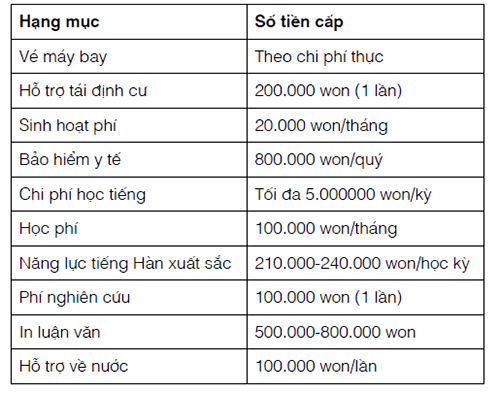

Khoảng cuối năm 1785, các lãnh tụ Tây Sơn tiếp tục khai triển những tuyên bố về chính trị và tính hợp pháp trong phạm vi lãnh thổ cũ của nhà Nguyễn ở phía nam đèo Hải Vân. Tuy nhiên, qua năm sau, tình hình biến đổi, và năm 1786 đánh dấu một sự phân rẽ trong phong trào Tây Sơn, khi những mối căng thẳng tiềm ẩn giữa các lãnh tụ Tây Sơn nổi lên một cách mạnh mẽ. Nguồn cội của những đổi thay này là sự bành trướng dần ảnh hưởng quân sự và chính trị của nhà Tây Sơn ở Đàng Ngoài, nổi bật với việc trước tiên Nguyên Huệ chiếm lấy Phú Xuân và ngay sau đó là kinh thành Thăng Long ở phía bắc trong một chiến dịch thần tốc. Về thực chất, phong trào bị chia rẽ vào mùa hè năm 1786 và một đường ranh chia cách đã được vạch ra giữa Nguyễn Nhạc, là người cẩn trọng hơn, song có lẽ ít tham vọng hơn, với người em trai năng động và có tài về quân sự là Nguyễn Huệ.

Hình 6: Bản đồ Đàng Ngoài cho thấy những vị trí then chốt liên quan đến hoạt động của nhà Tây Sơn ở khu vực phía bắc. Các tên trong trấn được đặt theo sự phân bố địa lý chung.
Trước thời điểm này, anh em Tây Sơn chiến đấu cùng với nhau trong khuôn khổ một sự lãnh đạo còn tương đối chặt chẽ, dưới sự giám sát tối hậu của Nguyễn Nhạc. Điều đáng tiếc là có ít thông tin về những động lực nội tại trong sự lãnh đạo của nhà Tây Sơn trong khoảng thời gian giữa những năm 1775 và 1786, do đó khó mà xác định bản chất và qui mô của những căng thẳng tồn tại từ lâu giữa hai anh em. Một chi tiết trong thư của một giáo sĩ có miêu tả việc hai anh em Nhạc-Huệ bất hòa với nhau về việc hành xử với người Cơ Đốc giáo vào năm 1784, cho thấy sự tồn tại của mối căng thẳng này. Vào thời điểm trên, người ta kể rằng Huệ đã đả kích mạnh mẽ chính sách của người anh qua việc thẳng tay đàn áp người Cơ Đốc giáo, lập luận rằng điều này gây nhiều chia rẽ vào lúc mà họ cần sự hợp nhất về mặt xã hội trong cuộc chiến đấu chống lại nhà Nguyễn đang diễn tiến. Bức thư miêu tả là Huệ rất giận dữ và Nhạc cũng miễn cưỡng đồng tình với những lập luận của người em*. Mặt khác, chúng ta chỉ có thể suy đoán rằng dù gì thì sự cáng thẳng đang tồn tại giữa hai anh em cũng được làm dịu đi bởi những chiến dịch quân sự diễn ra đều đặn khiến họ thường xuyên sống xa nhau và luôn bận rộn ở vùng đất phía nam. Cùng lúc đó, khi Huệ đạt được những thắng lợi liên tiếp ở phía nam trong lúc người anh vẫn bất động ở Chà Bán, người em có thể đã bắt đầu khuếch trương tham vọng chính trị của riêng mình. Dù ở trường hợp nào thì mối quan hệ giữa họ cũng đã thay đổi từ năm 1786 vớí chiến dịch chiếm lại Thuận Hóa từ tay quân Trịnh.
II.8.1. Tây Sơn tiến ra Bắc
Nhiều yếu tố khiến cho năm 1786 trở thành thời điểm thuận lợi cho việc tấn công quân Trịnh. Quan trọng nhất là chiến thắng có tính quyết định của quân Tây Sơn trước liên quân Nguyễn- Xiêm tại vùng châu thổ sông Cửu Long vào cuối năm 1785. Đòn trí mạng này buộc Nguyễn Ánh và những người ủng hộ ông phải sống lưu vong tại Xiêm và ở đó cho đến năm 1787. Trong tình trạng chúa Nguyễn ở xa và có vẻ như vùng đất phía nam đã chắc chắn nằm dưới sự kiểm soát của mình, cuối cùng thì anh em Tây Sơn đã nhìn ra phía bắc. Nhạc muốn lấy lại vùng đất mà quân Trịnh đã chiếm của chúa Nguyễn trong chiến dịch 1774-1775, một tham vọng mà ông ta đã nuôi dưỡng từ ít nhất là vào năm 1778. Thứ đến, Đàng Ngoài đã bị hủy hoại bởi một trận đói kéo dài tàn phá cả một vùng và trở nên đặc biệt dữ dội vào đầu năm 1786. Cuối cùng, Nhạc nhận được sự tư vấn và ý kiến về mặt chuyên môn của Nguyễn Hữu Chỉnh, một người đã phản lại triều đình phương Bắc và tham gia vào lực lượng quân sự phương Nam từ năm 1782. Chỉnh trốn khỏi Đàng Ngoài sau khi cảm thấy bị thất sủng trong một cuộc lật đổ ở triều đình tiếp sau cái chết của chúa Trịnh Sâm. Ngay cả sau khi đâ bỏ đi, Chỉnh vẫn còn quan hệ với chính quyền phía bắc. Mùa xuân năm 1786, ông ta tiếp một người quen đến thăm, là một sứ giả do chúa Trịnh gửi đến để thảo luận về vấn đề ranh giới với các lãnh tụ Tây Sơn. Sứ giả này đã cung cấp cho Chỉnh chi tiết của trận đói đang xảy ra ở phía bắc và thẳng thắn khuyến cáo người bạn của ông ta tiến hành một cuộc tấn công; ông ta biểu lộ sự bất bình với chính quyền họ Trịnh và những khó khăn to lớn đang diễn ra tại vương quốc phía bắc. Chỉnh được nghe kể lại về tình hình trong vùng quê của ông và cung cấp cho anh em Tây Sơn những thông tin họ cần nắm để chuẩn bị tiến hành cuộc tấn công.
Được Chỉnh cổ vũ là thời cơ đã chín muồi cho một cuộc tấn công, Nhạc phái Chỉnh và Nguyễn Huệ đi chiếm lấy những vùng đất họ Trịnh đang chiếm giữ ở phía bắc sông Gianh. Đã bị trận đói làm cho suy yếu, sức mạnh của những người bảo vệ khu vực này sa sút thêm sau một tuần lễ nhịn ăn theo lệnh của viên trấn thủ, như một phần của nghi thức chữa lành bệnh. Một cuộc tấn công ngắn ngủi vào kinh thành Phú Xuân đã hạ gục quân phòng thủ, phần lớn quân Trịnh đồn trú tại đây bị quân Tây Sơn tiêu diệt. Nhiều nguồn tư liệu viết rằng kết quả trận đánh là một cuộc thảm sát mà hầu như không một người nào trong lực lượng phòng thủ ở kinh thành còn sống sót. Viên tổng trấn cũng bị sát hại trong trận này. Sau khi giải quyết nhanh gọn lực lượng phòng thủ chính của quân Trịnh ở Phú Xuân, quân Tây Sơn nhanh chóng tiến về phía bắc, đến sông Gianh.
Thay vì tạm dừng chiến dịch tại con sông từ lâu được dùng làm ranh giới chia cắt giữa quân Trịnh và quân Nguyễn, Nguyễn Huệ quyết định vượt quá chỉ thị của người anh và mở rộng chiến dịch qua khỏi sông Gianh, hướng về kinh thành Thăng Long ở phía bắc. Nhiều nhà viết sử người Việt cho rằng trong những chiến dịch năm 1786, Nguyễn Huệ quyết định chiếm lấy Đàng Ngoài thay vì dừng lại ở sông Gianh. Một số người cho rằng họ nhìn thấy ở Huệ một ước vọng thống nhất đất nước, trong khi các nhà phân tích bi quan hơn thì giải thích quyết định của ông đơn thuần là sự phản ánh ý thức mạo hiểm cá nhân. Thật vậy, theo những tư liệu đương thời của cả người Việt và người châu Âu, người thúc đẩy việc mở rộng chiến dịch không phải là Nguyễn Huệ, mà đúng hơn là Nguyễn Hữu Chỉnh. Sách Hoàng Lê nhất thống chí , một trong những nguồn tư liệu quan trọng nhất về thời kỳ này, có thuật lại một cuộc đàm luận kéo dài giữa hai người, trong đó Chỉnh thúc giục Huệ nắm lấy cơ hội, mở rộng cuộc tấn công về hướng Thăng Long, lưu ý Huệ rằng ở phương Bắc lúc bấy giờ, không còn ai có nhiều sức mạnh hoặc sự hiểu biết để tổ chức kháng cự. Dù cho Chỉnh lập luận rằng có thể lấy lý do phục hồi ngôi vị nhà Lê để biện minh cho cuộc mạo hiểm này, điều rõ ràng là việc ông ta nóng lòng đi ra bắc là sự kết hợp giữa tham vọng cá nhân và mong muốn tră thù nhà họ Trịnh đã buộc ông ta phải sống kiếp lưu đày.
Căn cứ vào lời khuyên của Chỉnh, quân Tây Sơn mang theo những lá cờ đề rõ 4 chữ Phù Lê Diệt Trịnh, cho thấy rằng chiến dịch của họ nhằm giải thoát cho vua Lê*. Vì thế, cũng giống như những chiến dịch trước đây mà họ đã chiến đấu nhân danh người kế nghiệp “chân” chúa Nguyễn, lần này họ tiến ra Thăng Long dưới lá cờ nhà Lê. Họ không phải là những kẻ nổi loạn, mà là những lực lượng khôi phục nhắm đến việc “phò vua”. Nhưng ngay cả khi nhà Tây Sơn sử dụng danh nghĩa nhà Lê theo cách này, cũng đã có những dấu hiệu cho thấy họ có thể đồng thời sử dụng trở lại họ Nguyễn, nhân danh dòng họ Nguyễn, giải phóng đất bắc khỏi tay chúa Trịnh và giúp đỡ nhà Lê. Theo sách Sử ký Đại Nam Việt quốc triều , một tác phẩm không rõ năm ra đời (song chắc chắn là ở vào thế kỷ XIX), đã miêu tả mánh khóe đó với mấy chi tiết sau:
“Trước tiên, họ gửi đi một bức thư báo cho người dân biết rằng ‘nhà Nguyễn đã đánh bại quân Tây Sơn và đã bình định mọi vùng đất ở Đàng Trong; nay chúng tôi ra Đàng Ngoài, trước tiên để cứu dân lành và diệt họ Trịnh, do trong quá khứ họ đã gieo rắc nhiều khó khăn cho dân; thứ đến, là cứu giá nhà Lê; và thứ ba là do trước đây họ Nguyễn là các chúa cai trị toàn bộ khu vực Đàng Ngoài và tôn phò nhà Lê, và vì thế một lần nữa chúng tôi mong mỏi nắm lấy cương vị này’. Vì vậy, một số quân lính (của Tây Sơn) đã mang theo những lá cờ ghi hàng chữ ‘nhà Nguyễn có nhiệm vụ diệt Trịnh phù Lê’”.
Đoạn văn trên cho thấy rằng vào năm 1786, một lần nữa, nhà Tây Sơn nhấn mạnh đến mối quan hệ giữa họ với các chúa Nguyễn, coi như những người này từng có một kinh đô chính trị ở phía bắc. Ngoài ra, một giáo sĩ Pháp còn ghi chép rằng trong thời gian diễn ra các chiến dịch của nhà Tây Sơn, tiếng đồn loan truyền là chúa Nguyễn sắp đến, làm ra vẻ như quân Tây Sơn là một đạo quân của chúa Nguyễn. Có nhiều khả năng các lãnh tụ Tây Sơn tìm cách làm cho mọi người tin rằng chính họ là nhà Nguyễn khi trước đến để cứu giúp nhà Lê. Cho dù có thể người dân phía bắc có đôi chút ác cảm với chúa Nguyễn, nhưng sẽ có lý khi cho rằng họ sẽ chào đón các chúa Nguyễn hơn là chào đón những nông dân nổi dậy được đại diện bởi nhà Tây Sơn.
Cho dù sử dụng chiêu bài nào để biện minh cho việc tiến quân ra bắc, Nguyễn Huệ cũng đã đưa quân đội của ông vào một chiến dịch rất có hiệu quả chỉ kéo dài mấy tuần lễ. Một lần nữa, quân Tây Sơn chỉ phải đối phó với sự kháng cự yếu ớt của quân Trịnh, nạn đói kèm theo những cuộc đấu tranh chính tỏ nội bộ tại kinh đô đã làm giảm thiểu khả năng tổ chức một cuộc phòng thủ thích đáng. Vì thế, quân Tây Sơn đã vào thành Thăng Long ngày 21.7.1786 mà không gặp một sự kháng cự nào, chúa Trịnh đã chạy khỏi kinh thành. Khi đã vào hoàng thành, Nguyễn Huệ kiên định với lời hứa phục hồi địa vị của vua Lê. Ông thu xếp một cuộc bệ kiến và long trọng trao trả lại quyền hành cho vua Lê Cảnh Hưng*. Bù lại, vua Lê ban tước vị cho lãnh tụ Tây Sơn bao gồm tước rất cao là Đại Nguyên Soái Uy Quốc Công. Việc ban danh hiệu Đại Nguyên Soái là một hành động có ý nghĩa đặc biệt, bởi vì đây chính là danh hiệu mà các chúa Trịnh nắm giữ, và điều đó có ngụ ý là Nguyễn Huệ được vua Lê coi như người đã thay thế chúa Trịnh*. Có nhiều khả năng vua Lê coi việc nhà Tây Sơn trao quyền độc lập chính trị cho mình là một mưu mẹo và cho rằng hiện trạng sẽ được khôi phục, với nhà Tây Sơn đang giữ vai trò của chúa Trịnh đã bị trục xuất khỏi kinh thành.
Cho dù được vua Lê chào đón và ban tước vị, Nguyễn Huệ tỏ vẻ không hài lòng và thậm chí còn cảm thấy bị hạ nhục khi nhận như thế. Ông đã gián tiếp phàn nàn điều này với người tâm phúc là Nguyễn Hữu Chỉnh:
“Ta đã mang hàng chục ngàn quân, đánh chỉ một trận mà bình định cả vùng phía bắc sông Gianh. Từng tấc đất, từng con người ở đây đều là của ta, nếu ta muốn xưng đế, xưng vương, có gì cản được ta đâu. Về cái chỉ dụ cử ta làm Nguyên Soái Uy Quốc Công, đó có phải là điều quan trọng với ta không? Phải chăng người phương Bắc muốn dùng danh hiệu anh hùng để lung lạc ta? Ông có nghĩ rằng ta là kẻ mọi rợ nhận ngay lấy những danh vị này và coi đó là đủ danh dự và vinh quang cho ta rồi!"*.
Không thỏa mãn với những tước vị đó, lãnh tụ Tây Sơn tìm kiếm một phần thưởng lớn lao hơn. Điều đặc biệt là ông đã hỏi cưới cô công chúa triều Lê*. Không có cớ từ chối, vua Lê chịu gả cho Nguyễn Huệ cô con gái cưng của mình là công chúa Ngọc Hân.
Cũng giống như việc ban chức Đại Nguyên Soái, chuyện hôn nhân vua Lê chấp thuận cũng là sự tiếp nối mô thức đã được thiết lập trong mối quan hệ cộng sinh lâu dài giữa vua Lê và chúa Trịnh, thường là những cuộc hôn nhân giữa các công chúa triều Lê với người trong dòng họ Trịnh. Các chúa Trịnh thường cưới công chúa nhà Lê để cho mối quan hệ với hoàng tộc nhà Lê được luôn mới mẻ và sâu sắc. Bằng cách thâm nhập triều đình nhà Lê qua hôn nhân, anh em nhà Tây Sơn làm theo cách của các chúa Trịnh mà họ đã loại trừ và mở rộng mối quan hệ với những người cầm quyền chính trị. Trước tiên, Nguyễn Nhạc mưu toan một cuộc hôn nhân cưỡng bách giữa con gái ông ta và vị Thế tử trẻ tuổi của nhà Nguyễn*, và giờ đây, người em trai của ông đi theo một tiến trình tương tự, cho dù trong những tình huống có khác đôi chút. Bằng cách dàn xếp mối liên kết với nhà Lê qua hôn nhân, chỉ sau hơn 10 năm một chút, anh em Tây Sơn đã thiết lập hay mưu toan thiết lập mối quan hệ chính trị hoặc gia tộc với những nhà cầm quyền vào thời kỳ này, và thậm chí trong trường hợp người Chăm, họ còn loại bỏ các chính quyền địa phương. Thêm vào đó, như đã ghi trước đây, cuộc hôn nhân giữa Nguyễn Huệ và Ngọc Hân gợi nhớ lại cuộc hôn nhân vào thế kỷ XIV giữa vua Chăm Chế Bồng Nga và một bà công chúa Việt khác*. Một lần nữa, một nhân vật chính trị-quân sự phía nam đến từ một căn cứ trên lãnh thổ Chăm và đã được an ủi bằng cách được lấy một nàng công chúa.
Sau khi đã làm rể trong gia đình hoàng tộc phía bắc, Nguyễn Huệ sớm bị lôi cuốn vào các vấn đề chính trị trong triều khi vua Lê già nua qua đời chỉ mấy ngày sau lần tiếp kiến vị lãnh tụ Tây Sơn. Đã có những cuộc tranh cãi trong triều về việc nên chọn ai kế vị ngai vàng, vì không có một người thừa kế trực tiếp nào bên nam giới. Nguyễn Huệ trực tiếp tham gia vào cuộc bàn cãi về ai sẽ là người kế vị tốt nhất của vua Cảnh Hưng và cuối cùng chọn người cháu của vua là Lê Mân Đế lên ngôi với niên hiệu Chiêu Thống*, Mặc dù người cháu này là ứng viên hàng đầu, song ông ta còn khá trẻ* không có nhiều hiểu biết về chính trị hơn người tiền nhiệm, nên ông dễ bị lôi kéo bởi những nhân vật chính trị quyền uy hơn. Chưa đầy 6 tháng sau, ông ta đã phải nhờ sự che chở của những người còn sót lại của dòng họ Trịnh*.
II.8.2 . Một cuộc tranh cãi: Sự chia rẽ trong hàng ngũ Tây Sơn
Với sự phục hưng triều đại nhà Lê và việc kế vị đã được sắp xếp xong, có vẻ như Nguyễn Huệ đã củng cố chặt chẽ quyền hành của nhà Tây Sơn trên dải đất trải dài từ Hà Tiên ở vịnh Xiêm La đến biên giới Trung Quốc. Ngược lại, hành động của ông ở miền Bắc đã đánh dấu sự khỏi đầu mối bất hòa công khai về chính trị bên trong hàng ngũ nhà Tây Sơn. Hai yếu tố góp phần tạo ra sự nứt rạn này. Trước tiên là sự thách thức công khai của Nguyễn Huệ đối với quyền hành chính trị của người anh. Trong lúc đây không phải là lần đầu tiên Huệ thách thức mệnh lệnh của Nhạc, đây là sự vi phạm hiển nhiên nhất đối với chính quyền khởi thủy từ Qui Nhơn. Cho dù Huệ có gửi một thư thông báo cho người anh ý định đẩy chiến dịch đi xa hơn và tấn công Thăng Long, song ông đã không chờ được trả lời trước khi bắt đầu cuộc tấn công.
Yếu tố thứ hai góp phần vào sự căng thẳng giữa hai anh em đơn giản là lãnh thổ nằm dưới ảnh hưởng của nhà Tây Sơn đã tăng lên hơn gấp đôi trong một sớm một chiều. Vì thế, lãnh thổ này trở thành dải đất rộng lớn nhất chưa từng được một chính quyền đơn độc nào kiểm soát, nó cũng trở nên khó cai trị hơn rất nhiều. Trong lúc Nguyễn Huệ chính thức chuyển giao quyền lực ở phía bắc cho nhà Lê, ông tiếp tục quan tâm vào những công việc ở vùng này, đặc biệt trong vùng đất quan trọng là Nghệ An, mà Huệ đã chiếm lấy từ triều đình nhà Lê và đặt nó dưới quyền hạn của mình. Do hậu quả của việc Nguyễn Huệ tấn công ra Đàng Ngoài, sức mạnh chính trị của nhà Tây Sơn bị kéo dãn ra, đặc biệt khi xét đến khoảng cách tương đối xa giữa Qui Nhơn với phần lãnh thổ ở phía bắc đèo Hải Vân.
Nguyễn Nhạc phản ứng lại loạt diễn biến này theo hai cách. Trước tiên, sau khi nhận được thư của Huệ vào giữa tháng 8, Nhạc lập tức tập hợp một đạo quân nhỏ và chạy vội ra bắc để kéo người em về. Sau khi trải qua 4 ngày ở Bắc hà, và bệ kiến tân hoàng đế nhà Lê, Nhạc đưa Huệ cùng đạo quân hỗn hợp xuôi về nam vào cuối tháng 8. Họ để Nguyễn Hữu Chỉnh ở lại, bề ngoài là để coi sóc những quyền lợi của họ ở Nghệ An, cho dù lúc đó có sự suy đoán rằng ông ta bị bỏ rơi bởi những người từng một thời liên kết với ông ta. Thứ đến, để đáp ứng với sự mở rộng việc kiểm soát lãnh thổ - và có lẽ cũng nhằm làm rõ mối quan hệ giữa ông ta và người em - Nhạc phân chia lãnh thổ giữa các anh em. Như đã đề cập ở trên, ông ta phong cho Nguyễn Huệ tước Bắc Bình vương, và giao cho nhiệm vụ trấn giữ đất Thuận Hóa, phần lãnh thổ mà Huệ vừa lấy lại từ quân Trịnh, và Nghệ An, do Huệ chiếm giữ của nhà Lê. Nhạc vẫn còn giữ cương vị Thái Đức hoàng đế, thêm vào danh nghĩa Trung ương Hoàng đế, xác định quyền kiểm soát toàn bộ xứ Quảng Nam, ngoại trừ vùng Gia Định. Vùng đất quan trọng ở phía nam được ông ta giao cho một người em khác là Nguyễn Văn Lữ, với tước Đông Định Vương. Vì vậy, chuỗi sự kiện bắt đầu vào năm 1786 đã đưa lãnh thổ nước Đại Việt vào một tình trạng qua phân về chính trị (thậm chí còn nặng nề hơn thời kỳ Trịnh- Nguyễn phân tranh).
Mối quan hệ chính trị về sau giữa ba anh em nhà Tây Sơn không được các nguồn tư liệu đương thời mô tả rõ ràng, về mặt kỹ thuật, chỉ có một hoàng đế thống trị toàn bộ lãnh thổ từ Nghệ An trở vào, là Nguyễn Nhạc. Từ những tài liệu chính thức được soạn thảo trong thời kỳ Nguyễn Huệ trị vì, chúng ta biết rằng ông vẫn tiếp tục công nhận người anh của ông là Thái Đức hoàng đế. Có vẻ như mối quan hệ chính trị giữa hai anh em cũng tương tự như mối quan hệ tồn tại dưới thời vua Lê, trong quan hệ với chúa Trịnh. Vua Lê từng là người đứng đầu triều đình trên danh nghĩa, với danh hiệu hoàng đế, trong khi chúa Trịnh nhận tước vương. Cho dù bản chất thật của mối quan hệ tồn tại giữa ba anh em Tây Sơn như thế nào, thực tế cho thấy có ba gương mặt chính trị cao cấp đang kiểm soát một lãnh thổ gồm phần lớn nước Đại Việt. Tuy nhiên, sự phân chia trách nhiệm về chính trị không triệt tiêu được sự thù địch ngày càng dâng cao giữa các anh em, và vào đầu năm 1787, Huệ và Nhạc lâm vào một cuộc nội chiến. Một vài tài liệu cho rằng Huệ giận dữ vì đã không được chia phần thích đáng từ những gì đã tranh thủ được trong các chiến dịch đánh ra phía bắc. Các tài liệu khác thì cho rằng Huệ cảm thấy bị sỉ nhục do Nhạc đã ngủ với một trong những người vợ của ông. Dù với lý do nào, chiến tranh cũng đã bùng nổ giữa hai anh em, lên đến đỉnh điểm khi Huệ tập hợp một đạo quân lên đến hơn 80.000 binh sĩ vây hãm thành Chà Bàn. Sau ba tháng bị vây hãm, cuối cùng thì Nhạc đã đầu hàng người em của mình. Điều kiện đầu hàng làm phức tạp thêm sự phân chia lãnh thổ giữa các anh em Tây Sơn, khi Nhạc nhượng hai huyện ở phía bắc Quảng Nam cho Huệ. Nó tạo nên một hình thể vụng về về mặt địa lý khi lãnh thổ của Huệ chồm qua hai bên đèo Hải Vân vốn từ lâu được xem như một đường ranh thiên nhiên chia đôi hai vùng đất về mặt địa lý. Mặt khác, nó tạo điều kiện cho Huệ mở rộng việc kiểm soát vùng Quảng Nam cùng tiềm năng tiếp cận những vùng đất xa hơn về phía nam.
Sự bất hòa giữa hai anh em tiếp tục dưới những hình thức tinh vi hơn sau khi cuộc xung đột công khai được giải quyết xong, và biểu lộ qua những nỗ lực của Nguyễn Huệ nhằm đảm bảo quyền lực của ông trên lãnh thổ miền Bắc. Trong lúc Huệ bị Nhạc kéo về nam vào cuối mùa hè năm 1786 và ở lại Phú Xuân thì Nguyễn Hữu Chỉnh bị bỏ lại ở Bắc hà và quyết định ở lại Nghệ An, tiếng là để bảo vệ quyền lợi của nhà Tây Sơn ở đây. Vì thế, khi một người còn sót lại của dòng họ Trịnh mưu toan tái lập quyền thống trị về chính trị của dòng họ Trịnh vào cuối năm 1786, chính Chỉnh là người ở gần mà vua Lê đã vời đến để giúp ông chống lại thách thức này. Khi đã quay về bắc, Chỉnh bắt đầu thể hiện quyền lực đối với vua Lê, trực tiếp đụng chạm đến các tuyên ngôn về chính trị của Nguyễn Huệ. Trước đây Huệ đã nhìn Chỉnh bằng con mắt hoài nghi do tầm vóc và ảnh hưởng đáng kể của ông ta ở Đàng Ngoài. Có lẽ điều cũng quan trọng là Huệ coi Chỉnh như một đồng minh thân cận của Nhạc, vì chính Nhạc là người đã phát triển mối quan hệ chặt chẽ với kẻ đã phản bội chúa Trịnh vào giữa những năm 1782-1786*. Trên phương diện này, quyết định của Huệ tước bỏ quyền lực của Chỉnh vào mùa hè năm 1787 có thể coi như một mưu toan gián tiếp làm giảm thiểu ảnh hưởng của Nhạc trên đất Bắc*. Quân đội của Huệ một lần nữa trở ra Bắc để truy bắt Chỉnh và cuối cùng họ bắt được ông ta và chém đầu vào cuối năm 1787, trong khi vua Lê, người đang dựa vào sự hỗ trợ của Chỉnh, đã rời khỏi kinh thành và đang đi trốn.
Người được cử thay mặt nhà Tây Sơn để giám sát một đất bắc không có người lãnh đạo là Võ Văn Nhậm, vốn là em rể của Nhạc*, đang là một viên tướng cao cấp trong quân đội Tây Sơn. Khi vừa ra đến Thăng Long, Nhậm đã phải đối mặt với một tình hình chính trị rối ren khi nhiều phần tử trung thành với vua Lê- chúa Trịnh đang tìm cách tổ chức quân đội để chiếm lại kinh thành. Việc hành xử quyền lực chính trị một cách nặng tay của Nhậm ở phía bắc làm dấy lên sự bất mãn của quần chúng và tiếng đồn đến tai Nguyễn Huệ ở Phú Xuân*. Huệ nhanh chóng quyết định hành động, một phần để dập tắt nguồn gốc gây ra nỗi bất hạnh cho người dân, phần khác nhằm loại bỏ một người đang nổi lên như một đối thủ chính trị tiềm tàng của Huệ. Mùa xuân năm 1788, Huệ dẫn quân ra Bắc và xử tử Nhậm như đã xử Chỉnh trước đó. Khử Nhậm, Huệ đã tiến thêm một bước trong việc làm giảm thiểu ảnh hưởng có thật hoặc trong tưởng tượng của Nguyễn Nhạc ở phương Bắc*. Việc Huệ diệt những người này không chỉ được thúc đẩy bởi mưu toan làm giảm thiểu ảnh hưởng của Nhạc ở phương Bắc, mà sự kiện này còn cần được coi là một phần trong tính toán của Huệ khi áp dụng những biện pháp đó. Với việc vua Lê trốn đi và hai tướng cũ của nhà Tây Sơn bị Nguyễn Huệ trừ khử, khu vực Bắc hà nằm dưới sự kiểm soát trực tiếp của lãnh tụ Tây Sơn ở phía bắc. Rồi trước khi quay về Phú Xuân, Huệ tuyển dụng một nhóm nhân sĩ rất được trọng vọng ở Bắc hà để trông coi vùng này với sự hỗ trợ của lực lượng Tây Sơn.